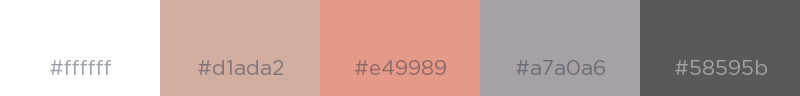
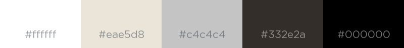
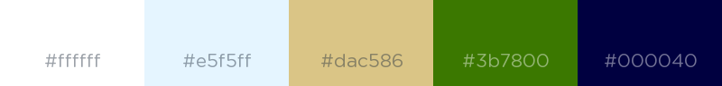

I am a freelance Junior Web Developer focussed on delivering high quality websites to my clients using a variety of technologies including HTML, CSS, JavaScript, React.js, Apache, PHP and SQL.
I enjoy the process of building the foundations of a website and then transforming the basic skeleton into something visually appealing and functional. I particularly enjoy creating websites with simple user interfaces and seamless transitions.
I am passionate about the blending of design and technology. I enjoy being able to turn concepts into dynamic and exciting user interfaces and experiences. I find the world of technology inspiring and am excited to be involved in the field as the industry evolves.
Please feel free to have a look at my recent projects while you are here, you can also find me on LinkedIn and GitHub at the links below.
I contributed to this eCommerce project in the role of Junior Web Developer. I coded site components according to design specifications and tested site components across various devices.
I created this site as a place to display my recent projects. The site has a sleek, minimalist look with images spanning the width of the page contrasted against a white background. Movement and navigation across the site is pleasing with seamless transitions. The site is easy to use and visually appealing across all platforms.
A current personal project involving the creation of a neutral website template using React.js. The warm and neutral colours featured across the site are comfortable and welcoming. White space has been used carefully to break up the site components and create a open feel. The site currently has a single page layout with the design potential for additional pages.
A current project involving the creation of a website for Lakes View Miniature Horse Stud. The lush greens, bright blues and rich browns featured in the imagery across the site are reminiscent of horses and the outdoors while the mindful application of white space ensures viewing that is easy on the eye. The single page layout flows and transitions smoothly and with ease. The design is compatible and pleasing to use across all platforms.
